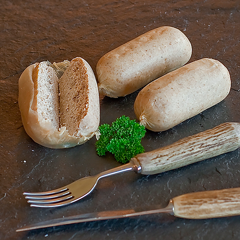

White pudding is a traditional Irish dish consisting of oatmeal, bread, pork meat, fat, and suet. In Ireland, the ingredients are stuffed into a sausage casing. The sausage is often sliced and fried or grilled, and it is usually used as an important part of the traditional full Irish breakfast.
Meal prep time : 1 hour 30 minutes
Servings : 12